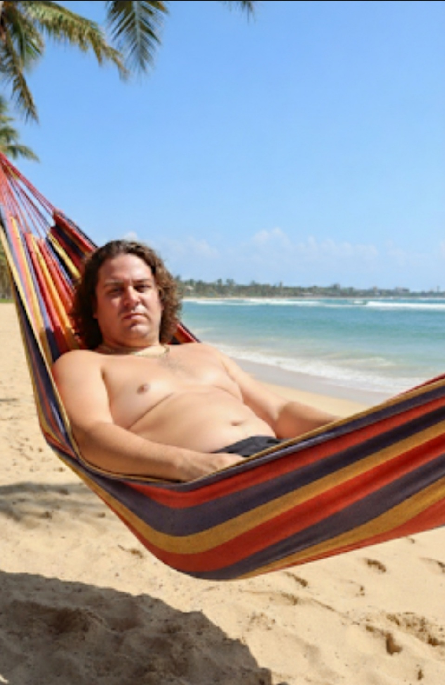
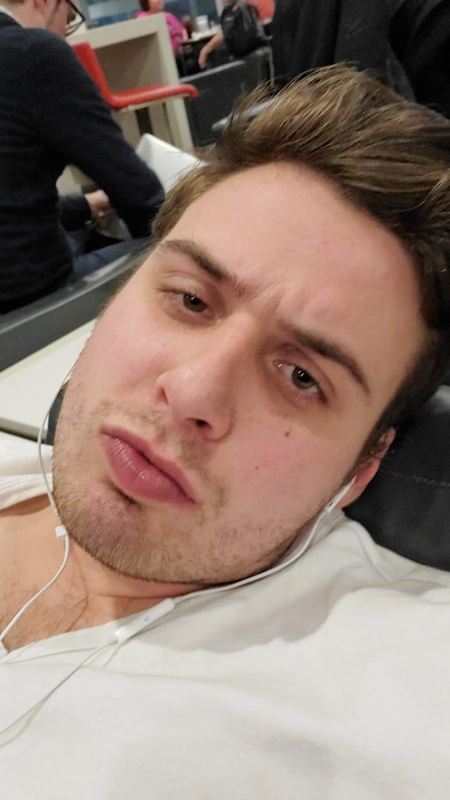

Before: Hammock Equilibrium
Rested, tropical, and operating at approximately 38% eyebrow intent.
Unaccredited Since This Morning
From hammock-era potential to airport-lounge severity, Paul has personally stress-tested every known pathway to looking slightly more intentional in low-quality group chats.
A transformation so bold it required two locations, one hammock, and the quiet confidence of wired earbuds.


The Chavy Waddy Protocol is a fully fictional three-step system for anyone ready to become almost unrecognizable to a passport scanner.
We locate the exact moment your casual vacation energy became too powerful for normal social media.
A bespoke volume strategy calibrated for wind, fluorescent lighting, and the front camera's cruel little lens.
The final transition from beach neutral to "I have reviewed the contract and found several concerns."
Choose your fictional tier. Results may include compliments, confusion, and a renewed commitment to looking directly into the camera.
Thirty minutes of vibe triage, hair theory, and one ceremonial profile-photo review.
Includes brow governance, terminal posture, and an emergency hammock exit plan.
Quarterly audits for anyone worried the beach version of themselves may return.